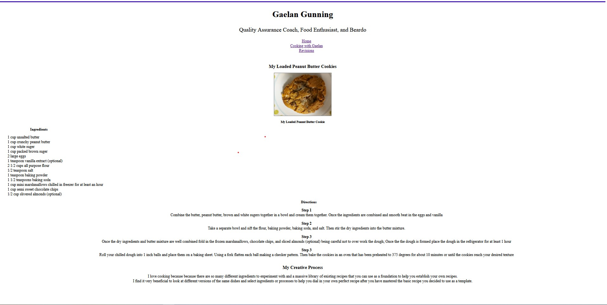

Gaelan Gunning
Quality Assurance Coach, Food Enthusiast, and Coding Novice
Revisions to my Page
I asked my brother, a tatoo artist for feeback on my recipe page which looked like this;

My brother made the following suggestions:
- The background is plain and uninteresting
- The ingredients not being aligned with the directions looks sloppy
- The bottom of the page seems cramped or seems like it might be a mistake
After implimenting the feedback I recieved, this was the result:
While I am happy with the improvements to the page after applying these changes I very much recognize there is a large opportunity for me to take more advantage of CSS to apply consistent design to the pages